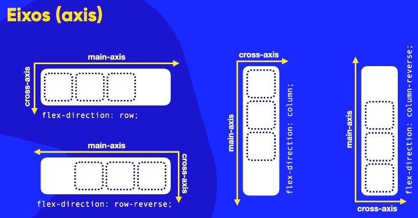
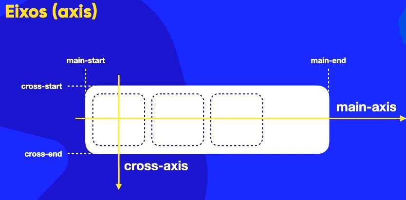

FlexBox
O Flexbox é um modelo de layout do CSS3 que permite criar layouts flexíveis e responsivos de forma mais fácil e eficiente. Ele foi projetado para lidar com a distribuição de espaço entre os itens em um contêiner, mesmo quando seu tamanho é desconhecido ou dinâmico.
funciona de forma semelhante à água em um recipiente. Ele é desenhado para ser fluido e se adaptar automaticamente ao tamanho do seu contêiner (o elemento pai), resolvendo problemas de responsividade que métodos antigos não conseguiam.
Conceitos básicos (Identificação do Pai e Filhos)
O Flexbox funciona com base em dois eixos: o eixo principal (main axis) e o eixo transversal (cross axis). O eixo principal é definido pela direção dos itens dentro do contêiner flexível, enquanto o eixo transversal é perpendicular ao eixo principal.
Contêiner (Pai): É onde você aplica a propriedade display: flex;. Ele é o responsável por controlar o comportamento do layout.
Itens (Filhos): São os elementos dentro do contêiner. Eles não recebem o display: flex;, mas sim outras propriedades que definem como eles se comportam dentro do pai.
Propriedades do Flexbox
- display: flex; - Define um contêiner como flexível.
- flex-direction: - Define a direção dos itens (row, column, row-reverse, column-reverse).
- justify-content: - Alinha os itens ao longo do eixo principal (flex-start, flex-end, center, space-between, space-around).
- align-items: - Alinha os itens ao longo do eixo transversal (flex-start, flex-end, center, baseline, stretch).
- flex-wrap: - Define se os itens devem quebrar para a próxima linha (nowrap, wrap, wrap-reverse).
- align-content: - Alinha as linhas do contêiner quando há espaço extra no eixo transversal.
Aplicação prática
Para ativar o Flexbox em um elemento, use no CSS:
.container { display: flex; }.
Para fazer com que os itens internos sejam fluidos e ocupem o espaço disponível, utilize: .item {flex: auto; }.
Flexibilidade: Diferente de layouts tradicionais (display: block ou inline-block), o Flexbox permite alinhar elementos horizontal ou verticalmente com muito mais facilidade e sem quebrar o layout quando a tela é redimensionada.
A seguir está um exemplo simples de como usar o Flexbox para criar um layout de três colunas:
.container {
display: flex;
}
Direções e Eixos Flexbox CSS
São dois pilares fundamentais do Flexbox: a configuração de direções (flex-direction) e a compreensão dos eixos (main axis e cross axis). Aqui estão os pontos principais:
Flex-direction
A propriedade flex-direction (Configurada no elemento Pai/Contêiner) define a direção na qual os itens flexíveis são colocados no contêiner. Ela pode assumir quatro valores principais:
- - row (Padrão): Linha deitada, da esquerda para a direita.
- - row-reverse: Linha deitada, da direita para a esquerda.
- - column (Padrão): Coluna em pé, de cima para baixo.
- - column-reverse: Coluna em pé, de baixo para cima.

Entendendo os Eixos
O Flexbox trabalha com dois eixos principais que determinam como os itens são dispostos dentro do contêiner, cada configuração de direção altera o posicionamento dos eixos, que são cruciais para o alinhamento (justify-content e align-items):
- - Main Axis (Eixo Principal): É a direção principal onde os itens são enfileirados. Possui os pontos Main-start (início) e Main-end (fim).
- - Cross Axis (Eixo Transversal): É o eixo perpendicular ao principal. Possui os pontos Cross-start e Cross-end.

Empacotamento e fluxo no Flexbox CSS
A propriedade flex-wrap (Configurada no elemento Pai/Contêiner) define se os itens flexíveis devem ser empacotados em uma única linha ou em múltiplas linhas, o encolhimento dos itens dentro de um Flexbox vai depender muito do conteúdo que existe nele. Com a propriedade nowrap significa "ó não quebra", não faz que os blocos saiam da sequência que foi ordenada. Agora a propriedade wrap vai quebrar (encapsulamento) ele no sentido transversal do Cross Axis, a quebra do wrap é sempre no sentido do eixo transversal.
Agora a propriedade wrap-reverse vai quebrar (encapsulamento) no oposto do Cross Axis, a quebra do wrap-reverse é sempre no sentido contario do eixo transversal. Ela pode assumir três valores principais:
- - nowrap (Padrão): Os itens não quebram de linha e tentam encolher conforme o conteúdo. Não tem hífen.
- - wrap: Permite que os itens quebrem para a próxima linha (ou coluna) no sentido do eixo transversal (Cross Axis).
- - wrap-reverse: Os itens quebram no sentido oposto ao eixo transversal.


Pode usar uma shorthand para definir as propriedades flex-wrap, flex-direction e flex-flow em uma única declaração. O flex-flow que combina flex-direction e flex-wrap, inclusive é uma indicação da W3C usar flex-flow no lugar de definir as duas propriedades separadamente. Por exemplo.:
.container {
display: flex;
flex-flow: row wrap;
}
.container {
display: flex;
flex direction: row;
flex-wrap: wrap;
}